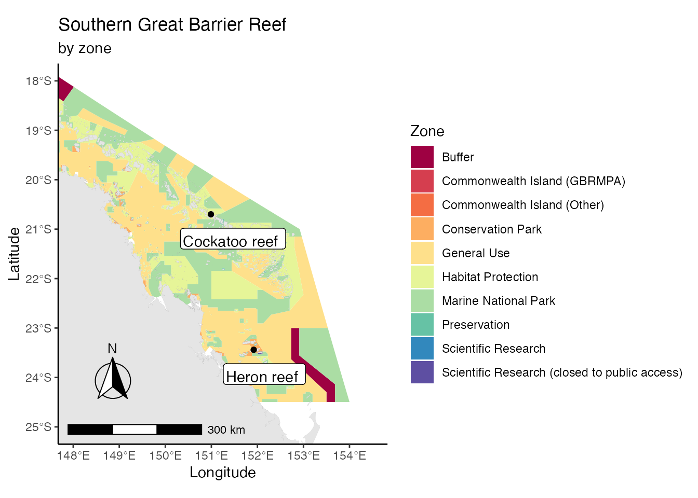

Introduction
gisaimsr was developed to provide scientists with easy access to some key spatial datasets associated with key marine ecosystems in Australia where most of the work conducted by the Australian Institute of Marine Science takes place. If you would like to see more spatial datasets made available through this package, please submit a request via our issues page on GitHub.
Different from most R packages, this package should be viewed as a data package only. Therefore, the purpose of this vignette is to teach how one can: (i) query which spatial datasets are available and how to access them, and (ii) provide illustrated examples of data exploration and plots.
Our datasets were originally provided by Geoscience Australia (GA) and the Great Barrier Reef Marine Park Authority (GBRMPA). Please see our README page for full information regarding data and package licenses.
Installing the package
Before moving forward on this page, please refer to our README page for full information regarding package installation and dependencies.
The datasets
Our datasets are in simple features data.frame format, which is being actively developed and soon is likely to be the main go-to spatial object in R. There is no point in repeating abundant information; if you want an overview of spatial data objects in R, and simple features in particular, please see the further readings section at the end of this vignette.
Currently all of our spatial datasets are from Queensland because of AIMS historical focus on the Great Barrier Reef. If you would like to access spatial datasets from other parts of the country (e.g. tropical Western Australia and Northern Territory), please submit a request via our issues page on GitHub. A list of datasets and their associated full documentation can be found on our reference page, but briefly we provide datasets on:
Great Barrier Reef Marine Park Boundary (object
gbr_feat)Great Barrier Reef Features (object
gbr_bounds)Great Barrier Reef Marine Park Zoning (object
gbr_zoning)Natural Resource Management Marine Regions Relating to the Great Barrier Reef Marine Park (object
nrm_regions)Marine Water Bodies within the Great Barrier Reef (object
wbodies)Queensland Hydrology data (object
qld_hydro)
All datasets are standardised to the Geocentric Datum of Australia (GDA94). However, this vignette will guide you through some examples about changing the projection of the datasets if needed.
Examples
Before we explore and plot some data, let’s first load some packages that we are going to need further down the track; most of them can be downloaded using the install.packages function in R. gisaimsr and dataaimsr can be installed using the remotes package (see more on our README page).
library(raster) library(tidyverse) library(ggspatial) library(sf) library(dataaimsr) library(gisaimsr)
We recommend always loading the sf package whenever loading gisaimsr—this will facilitate the summary view of the datasets. We look at what the gbr_feat object comprises:
gbr_feat## Simple feature collection with 5363 features and 20 fields
## geometry type: MULTIPOLYGON
## dimension: XY
## bbox: xmin: 138.0012 ymin: -29.17855 xmax: 153.5516 ymax: -10.34855
## geographic CRS: GDA94
## First 10 features:
## OBJECTID SORT_GBR_I LABEL_ID SUB_NO CODE UNIQUE_ID FEATURE_C
## 1 2282 20039 20-039 100 20-039-100-106 20039100106 106
## 2 1408 15009 15-009 100 15-009-100-104 15009100104 104
## 3 1721 21569 21-569 100 21-569-100-104 21569100104 104
## 4 4278 19239 19-239 100 19-239-100-104 19239100104 104
## 5 1118 11292 11-292 100 11-292-100-104 11292100104 104
## 6 1951 20073 20-073 100 20-073-100-102 20073100102 102
## 7 4005 21441 21-441 100 21-441-100-104 21441100104 104
## 8 782 99517 99-517 100 99-517-100-104 99517100104 104
## 9 4505 20145 20-145 100 20-145-100-104 20145100104 104
## 10 251 14077 14-077b 102 14-077-102-104 14077102104 104
## GBR_NAME FEAT_NAME QLD_NAME X_LABEL GBR_ID
## 1 Hill Rock Rock Hill Rock 20-039S 20039
## 2 Forrester Reef Reef Forrester Reef 15-009S 15009
## 3 U/N Reef Reef U/N Reef 21-569S 21569
## 4 U/N Reef Reef U/N Reef 19-1020S 19239
## 5 U/N Reef Reef <NA> 11-1034S 11292
## 6 Wirrainbeia Island Island Wirrainbeia Island 20-073S 20073
## 7 U/N Reef Reef U/N Reef 21-441S 21441
## 8 U/N Reef Reef U/N Reef 10-1135S 99517
## 9 Packer Reefs Reef Packer Reefs 20-145S 20145
## 10 U/N Reef Reef U/N Reef 14-077B 14077B
## LOC_NAME_S LOC_NAME_L X_COORD Y_COORD
## 1 Hill Rock (20-039) Hill Rock (20-039) 148.9064 -20.25866
## 2 Forrester Reef (15-009) Forrester Reef (15-009) 145.4961 -15.16673
## 3 U/N Reef (21-569) U/N Reef (21-569) 152.5358 -21.84827
## 4 U/N Reef (19-239) U/N Reef (19-239) 149.5259 -19.39143
## 5 U/N Reef (11-292) U/N Reef (11-292) 143.9887 -11.34939
## 6 Wirrainbeia Island (20-073) Wirrainbeia Island (20-073) 149.1422 -20.23374
## 7 U/N Reef (21-441) U/N Reef (21-441) 151.7746 -21.52741
## 8 U/N Reef (99-517) U/N Reef (99-517) 142.3817 -10.70295
## 9 Packer Reefs (20-145) Packer Reefs (20-145) 150.2041 -20.47503
## 10 U/N Reef (14-077b) U/N Reef (14-077b) 145.2351 -14.32905
## Area_HA GlobalID Shape_STAr Shape_STLe
## 1 0.00000 {6CFEA6F6-33A2-444A-835B-0003206EBA49} 14139.68 471.0188
## 2 1439.25061 {52B4FEDB-0481-4138-8CC5-000EB8B50614} 15542327.77 15429.7742
## 3 286.62817 {90B3A494-343E-42CA-A598-001C3C7FA050} 3318976.46 7885.3901
## 4 1010.43347 {2AD6E5F7-294A-4FC2-B6CE-00245020560A} 11405155.41 16093.9274
## 5 12.76182 {7268EEBC-871C-41E6-8C00-005264F22EA5} 133334.98 1408.1955
## 6 0.00000 {7FBD05AC-4B0F-47C2-8742-00592B6D0BE8} 44034.21 973.7373
## 7 817.89062 {7EDEAEF9-52AF-43D8-9DE0-005BBD5A7782} 9448387.25 13169.4936
## 8 83.06730 {6609D9D3-B88F-4FFD-A561-008972358524} 860979.31 5899.5177
## 9 279.93286 {94FE9403-4ECE-4778-B0FB-00A75CA5BBFB} 3199563.01 7209.1005
## 10 47.87914 {C0C11C29-3B5A-4125-B066-00A886B5D194} 512998.47 2768.0494
## geometry
## 1 MULTIPOLYGON (((148.9069 -2...
## 2 MULTIPOLYGON (((145.5141 -1...
## 3 MULTIPOLYGON (((152.5456 -2...
## 4 MULTIPOLYGON (((149.507 -19...
## 5 MULTIPOLYGON (((143.9891 -1...
## 6 MULTIPOLYGON (((149.1426 -2...
## 7 MULTIPOLYGON (((151.7886 -2...
## 8 MULTIPOLYGON (((142.3876 -1...
## 9 MULTIPOLYGON (((150.2114 -2...
## 10 MULTIPOLYGON (((145.2375 -1...A two-part summary was printed to the screen. The top part summarises the features (rows) X fields (columns) of the spatial dataset, its geographical boundaries and projection. The second part displays the first 10 rows of the dataset. These fields contain all of the original info on the dataset, and the last column geometry contains the actual spatial information of that particular feature, e.g.
gbr_feat$geometry[1, ]
## Geometry set for 1 feature
## geometry type: MULTIPOLYGON
## dimension: XY
## bbox: xmin: 148.9059 ymin: -20.25925 xmax: 148.907 ymax: -20.25791
## geographic CRS: GDA94## MULTIPOLYGON (((148.9069 -20.2591, 148.9069 -20...The nice thing about this type of format is that it can be subset in whichever way we want, as we would do for a regular data.frame. For instance, we can isolate the first occurrence of the dataset
gbr_feat[1, ]
## Simple feature collection with 1 feature and 20 fields
## geometry type: MULTIPOLYGON
## dimension: XY
## bbox: xmin: 148.9059 ymin: -20.25925 xmax: 148.907 ymax: -20.25791
## geographic CRS: GDA94
## OBJECTID SORT_GBR_I LABEL_ID SUB_NO CODE UNIQUE_ID FEATURE_C
## 1 2282 20039 20-039 100 20-039-100-106 20039100106 106
## GBR_NAME FEAT_NAME QLD_NAME X_LABEL GBR_ID LOC_NAME_S
## 1 Hill Rock Rock Hill Rock 20-039S 20039 Hill Rock (20-039)
## LOC_NAME_L X_COORD Y_COORD Area_HA
## 1 Hill Rock (20-039) 148.9064 -20.25866 0
## GlobalID Shape_STAr Shape_STLe
## 1 {6CFEA6F6-33A2-444A-835B-0003206EBA49} 14139.68 471.0188
## geometry
## 1 MULTIPOLYGON (((148.9069 -2...In a similar fashion, we can subset the data based on a particular field value
gbr_feat %>% filter(GBR_NAME == "Forrester Reef")
## Simple feature collection with 1 feature and 20 fields
## geometry type: MULTIPOLYGON
## dimension: XY
## bbox: xmin: 145.4744 ymin: -15.18606 xmax: 145.5166 ymax: -15.14692
## geographic CRS: GDA94
## OBJECTID SORT_GBR_I LABEL_ID SUB_NO CODE UNIQUE_ID FEATURE_C
## 1 1408 15009 15-009 100 15-009-100-104 15009100104 104
## GBR_NAME FEAT_NAME QLD_NAME X_LABEL GBR_ID
## 1 Forrester Reef Reef Forrester Reef 15-009S 15009
## LOC_NAME_S LOC_NAME_L X_COORD Y_COORD Area_HA
## 1 Forrester Reef (15-009) Forrester Reef (15-009) 145.4961 -15.16673 1439.251
## GlobalID Shape_STAr Shape_STLe
## 1 {52B4FEDB-0481-4138-8CC5-000EB8B50614} 15542328 15429.77
## geometry
## 1 MULTIPOLYGON (((145.5141 -1...which is extremely handy when we want to plot particular sections of the dataset
gbr_feat %>% data.frame %>% select(FEAT_NAME) %>% distinct()
## FEAT_NAME
## 1 Rock
## 2 Reef
## 3 Island
## 4 Cay
## 5 Sand
## 6 Mainlandgbr_feat %>% dplyr::filter(FEAT_NAME != "Mainland") %>% ggplot(data = .) + geom_sf() + theme_classic()
As we can see the default of geom_sf is not necessarily nice. We can play with some of the arguments in the function to make the plots more pleasing, including colouring the land based on a particular field (i.e. column), and adding some ocean colour to the plot’s background
ggplot(data = gbr_feat) + geom_sf(mapping = aes(fill = FEAT_NAME), lwd = 0.01) + theme_classic() + labs(x = "Longitude", y = "Latitude", title = "The Great Barrier Reef")

We can also overlay different objects from gisaimsr, clip the map to a particular area, and add points to our map
coords <- data.frame(lat = c(-23, -24), lon = c(150, 151)) ggplot() + geom_sf(data = gbr_zoning, mapping = aes(fill = TYPE), colour = NA) + geom_sf(data = gbr_feat, lwd = 0.01, fill = "burlywood2") + annotation_scale(location = "bl", width_hint = 0.5) + annotation_north_arrow(location = "bl", which_north = "true", pad_x = unit(0.25, "in"), pad_y = unit(0.4, "in"), style = north_arrow_fancy_orienteering) + coord_sf(xlim = c(148, 154.5), ylim = c(-25, -18)) + geom_point(data = coords, mapping = aes(x = lon, y = lat)) + theme_classic() + theme(panel.background = element_rect(fill = "lightblue", colour = "lightblue", size = 0.5, linetype = "solid")) + labs(x = "Longitude", y = "Latitude", title = "Southern Great Barrier Reef")

The functions annotation_scale and annotation_north_arrow from the ggspatial package allow the addition of scale bars and orientation. coord_sf from ggplot2 allows for the delimitation of the plot area. It also allows one to change the projection of the map by changing the Coordinate Reference System (CRS)
ggplot(data = gbr_feat) + geom_sf(lwd = 0.01, fill = "burlywood2") + theme_classic() + coord_sf(crs = "+proj=moll") + theme(panel.background = element_rect(fill = "lightblue", colour = "lightblue", size = 0.5, linetype = "solid")) + labs(x = "Longitude", y = "Latitude", title = "The Great Barrier Reef", subtitle = "World Mollweide projection")
The argument crs in coord_sf could have been an EPSG (European Petroleum Survey Group) code (e.g. crs = sf::st_crs(7844) for the new GDA2020). One can search for different projections and codes here and here.
Finally, you can also crop a particular dataset for a user-defined region before plotting the object. This requires some code to first create a bounding box on equivalent CRS to the target dataset to be cropped, and then some wrangling to fix any original invalid geometries from the original dataset:
# first define box cropbox <- extent(140, 146, -15, -10) %>% as("SpatialPolygons") %>% st_as_sf %>% st_set_crs(st_crs(gbr_feat)) gbr_feat %>% st_make_valid %>% st_intersection(cropbox) %>% ggplot(data = .) + geom_sf(lwd = 0.01, fill = "burlywood2") + theme_classic() + theme(panel.background = element_rect(fill = "lightblue", colour = "lightblue", size = 0.5, linetype = "solid")) + labs(x = "Longitude", y = "Latitude", title = "Northern Great Barrier Reef")
Further readings
Spatial data in R https://www.jessesadler.com/post/gis-with-r-intro/ https://www.flutterbys.com.au/stats/tut/tut5.4.html
Simple features data.frame https://r-spatial.github.io/sf/articles/sf1.html https://www.jessesadler.com/post/simple-feature-objects/ https://github.com/rstudio/cheatsheets/raw/master/sf.pdf
Plotting spatial data in R https://www.r-spatial.org/r/2018/10/25/ggplot2-sf.html https://cran.r-project.org/web/packages/rnaturalearth/vignettes/rnaturalearth.html
About Coordinate Reference Systems https://www.nceas.ucsb.edu/sites/default/files/2020-04/OverviewCoordinateReferenceSystems.pdf